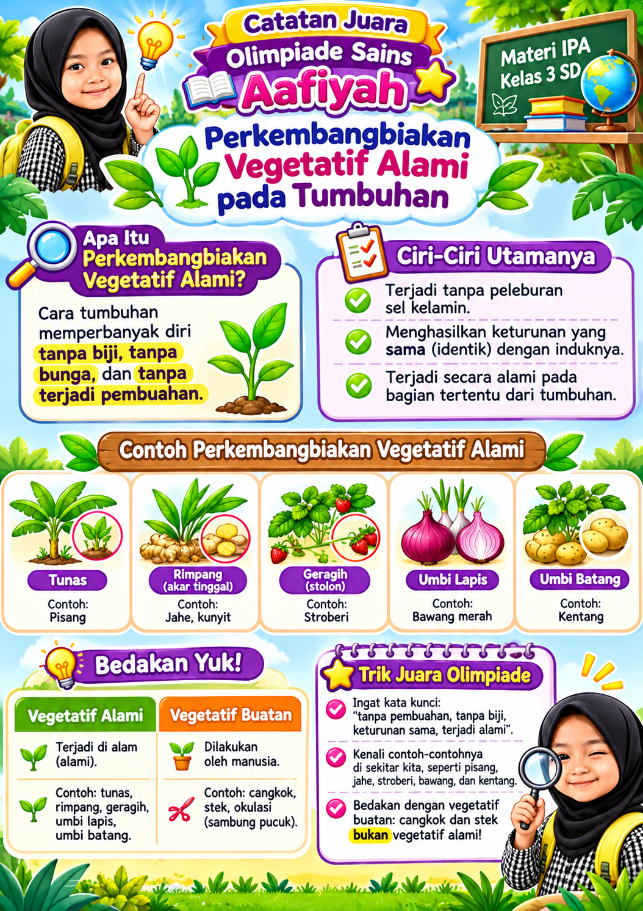

📘 Pelajari Materi
Perkembangbiakan Vegetatif Alami pada Tumbuhan

🌱 Konsep inti: vegetatif alami adalah perkembangbiakan tanpa peleburan sel kelamin melalui bagian tubuh tumbuhan, tanpa teknik perbanyakan yang dilakukan manusia. Contohnya tunas, rimpang, geragih, umbi lapis, dan umbi batang.
🔎 Catatan akurasi: jangan menjadikan “tanpa bunga” sebagai syarat mutlak vegetatif alami. Tumbuhan yang memiliki bunga tetap dapat berkembang biak secara vegetatif. Pembeda utamanya adalah cara terbentuknya individu baru, bukan apakah tumbuhan itu memiliki bunga.